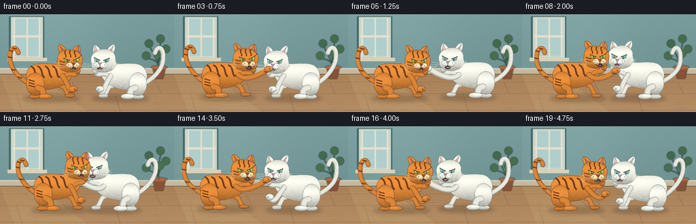
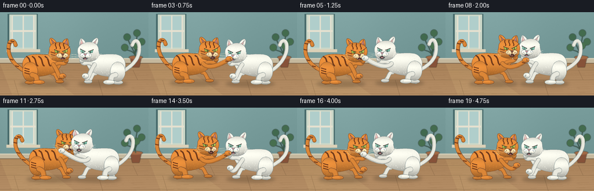
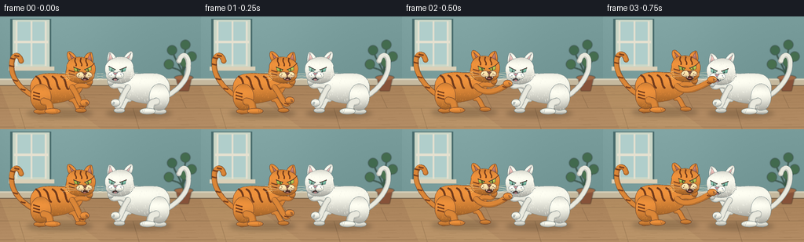

CODING AGENTS AS PIXEL WORLD MODELS
traex/GPT-6.1-Sol · instance_preservation_0005
点击播放 · 原生 RGB 像素
逐轮保存的候选
回放视频、检查图与代码变化。
每份候选均可单独播放。实际图片检查记录在下方工具轨迹中。
候选 01播放与检查图
点击播放 · 原生 RGB 像素

展开代码变化
--- 上一保存版本
+++ 本次保存版本
@@ -0,0 +1,245 @@
+from pathlib import Path
+import math
+import numpy as np
+from PIL import Image, ImageDraw, ImageFilter
+import artifact_io
+
+ROOT=Path(__file__).resolve().parent
+S=4
+W,H=256,144
+rng=np.random.default_rng(129)
+
+def bezier(points,n=24):
+ out=[]
+ for seg in points:
+ p=np.array(seg,float)
+ for t in np.linspace(0,1,n,endpoint=False):
+ q=(1-t)**3*p[0]+3*(1-t)**2*t*p[1]+3*(1-t)*t*t*p[2]+t**3*p[3]
+ out.append(tuple(q))
+ out.append(tuple(points[-1][-1]));return out
+
+def path(start,*curves):
+ seg=[];p=start
+ for a,b,c in curves: seg.append([p,a,b,c]);p=c
+ return bezier(seg)
+
+def sc(points):return [(int(x*S),int(y*S)) for x,y in points]
+
+def line(im, pts, color, width):
+ d=ImageDraw.Draw(im);p=sc(pts)
+ d.line(p,fill=color,width=max(1,round(width*S)),joint='curve')
+ r=width*S/2
+ for x,y in [p[0],p[-1]]: d.ellipse((x-r,y-r,x+r,y+r),fill=color)
+
+def ell(im, box, color):ImageDraw.Draw(im).ellipse(tuple(int(v*S) for v in box),fill=color)
+
+# Quiet, softly lit room; all objects remain fixed through the shot.
+yy,xx=np.mgrid[0:H*S,0:W*S]/S
+wall=np.zeros((H*S,W*S,3),float)
+wall[:]=np.array([104,140,139])[None,None,:]
+wall+=(16*(1-yy/H)+10*np.exp(-((xx-74)/90)**2))[...,None]
+noise=np.random.default_rng(5).normal(0,.55,wall.shape[:2])
+wall+=noise[...,None]
+bg=Image.fromarray(np.clip(wall,0,255).astype(np.uint8))
+d=ImageDraw.Draw(bg)
+# window and diffuse daylight on upper left
+for box,c in [((13,3,65,68),(70,105,106)),((16,4,63,65),(202,215,200)),((20,7,59,61),(176,206,203))]:
+ d.rectangle(tuple(v*S for v in box),fill=c)
+for x in [20,39,57]: d.rectangle((x*S,6*S,(x+2)*S,63*S),fill=(230,225,208))
+d.rectangle((18*S,31*S,61*S,34*S),fill=(230,225,208))
+d.rectangle((11*S,64*S,69*S,69*S),fill=(219,208,183))
+# baseboard and wood
+floor=np.zeros((H*S,W*S,3),float)
+floor[:]=[168,129,89]
+floor+=(12*(yy-88)/56)[...,None]
+floor+=np.sin(yy*1.55+np.sin(xx*.025)*2)[...,None]*1.3
+floor+=np.random.default_rng(32).normal(0,.75,(H*S,W*S))[...,None]
+fim=Image.fromarray(np.clip(floor,0,255).astype(np.uint8))
+bg.paste(fim.crop((0,87*S,W*S,H*S)),(0,87*S))
+d=ImageDraw.Draw(bg)
+d.rectangle((0,80*S,W*S,88*S),fill=(197,184,157))
+d.line((0,80*S,W*S,80*S),fill=(211,205,182),width=2*S)
+d.line((0,88*S,W*S,88*S),fill=(111,92,70),width=S)
+for y in [100,117,141]:
+ d.line((0,y*S,W*S,y*S),fill=(132,101,71),width=S//2)
+ d.line((0,(y+.6)*S,W*S,(y+.6)*S),fill=(187,147,101),width=S//2)
+for x,y1,y2 in [(46,88,100),(171,88,100),(106,100,117),(229,100,117),(24,117,144),(169,117,144)]:
+ d.line((x*S,y1*S,(x+8)*S,y2*S),fill=(133,101,69),width=S//2)
+for _ in range(85):
+ x=float(rng.uniform(0,256));y=float(rng.uniform(91,144));l=float(rng.uniform(3,25))
+ d.line((x*S,y*S,(x+l)*S,(y-.2)*S),fill=(157,119,81),width=1)
+# translucent sun pool
+sun=Image.new('RGBA',bg.size)
+sd=ImageDraw.Draw(sun)
+sd.polygon(sc([(0,89),(55,89),(128,143),(21,143)]),fill=(254,224,149,24))
+bg=Image.alpha_composite(bg.convert('RGBA'),sun).convert('RGB')
+# small plant, decorative but unobtrusive
+plant=Image.new('RGBA',bg.size);pd=ImageDraw.Draw(plant)
+pd.polygon(sc([(224,78),(244,78),(240,95),(228,95)]),fill=(134,82,57,255))
+pd.ellipse((222*S,75*S,246*S,81*S),fill=(162,106,70,255))
+for i,(ex,ey) in enumerate([(220,42),(237,35),(245,50),(216,60),(236,57)]):
+ line(plant,path((234,78),((230,62),(ex,ey+10),(ex,ey))), (59,91,69,255),1.3)
+ pd.ellipse(((ex-7)*S,(ey-5)*S,(ex+5)*S,(ey+7)*S),fill=(65+i*2,105+i*2,78,255))
+plant=plant.filter(ImageFilter.GaussianBlur(.55*S));bg=Image.alpha_composite(bg.convert('RGBA'),plant).convert('RGB')
+bg=bg.filter(ImageFilter.GaussianBlur(.25*S))
+
+class Cat:
+ def __init__(self,im, x,y, facing,orange,seed):
+ self.im=im;self.x=x;self.y=y;self.f=facing;self.orange=orange
+ self.base=np.array([219,134,55] if orange else [233,233,222],float)
+ self.dark=(124,65,30) if orange else (133,145,146)
+ self.out=(105,65,43) if orange else (123,139,140)
+ self.light=(248,181,89) if orange else (252,250,239)
+ self.rng=np.random.default_rng(seed)
+ def tr(self,ps):return [(self.x+self.f*x,self.y+y) for x,y in ps]
+ def stroke(self,ps,col,w):line(self.im,self.tr(ps),col,w)
+ def oval(self,cx,cy,rx,ry,color=None,fur=0):
+ ps=[(cx+rx*math.cos(a),cy+ry*math.sin(a)) for a in np.linspace(0,2*math.pi,90)]
+ self.shape(ps,color,fur)
+ def shape(self,ps,color=None,fur=0):
+ pts=self.tr(ps)
+ mask=Image.new('L',self.im.size); md=ImageDraw.Draw(mask);md.polygon(sc(pts),fill=255)
+ a=np.asarray(mask);where=np.where(a>0)
+ if not len(where[0]):return
+ x0,x1=where[1].min(),where[1].max()+1;y0,y1=where[0].min(),where[0].max()+1
+ ly,lx=np.mgrid[y0:y1,x0:x1]
+ ux=(lx-x0)/(x1-x0);uy=(ly-y0)/(y1-y0)
+ shade= .86+.15*np.sin(uy*math.pi)+.12*np.exp(-((uy-.25)/.3)**2)-.17*uy**3
+ shade-=.09*(ux-.35)**2
+ base=self.base if color is None else np.array(color,float)
+ rgb=base[None,None,:]*shade[...,None]
+ rgb+=(self.rng.normal(0,.55,uy.shape))[...,None]
+ patch=Image.fromarray(np.clip(rgb,0,255).astype(np.uint8))
+ self.im.paste(patch,(x0,y0),mask.crop((x0,y0,x1,y1)))
+ # gentle silhouette contour and fine directional hair
+ self.stroke(ps+[ps[0]],self.out,.45)
+ if fur:
+ for _ in range(fur):
+ ix=int(self.rng.integers(x0,x1));iy=int(self.rng.integers(y0,y1))
+ if a[iy,ix] and iy+8<a.shape[0] and a[iy+8,ix]:
+ x=ix/S;y=iy/S
+ c=tuple(int(v) for v in np.clip(base*(1.04+self.rng.uniform(-.06,.06)),0,255))
+ line(self.im,[(x,y),(x-self.f*.45,y+1.4)],c,.21)
+ def limb(self,pts,w):
+ self.stroke(pts,self.out,w+.7)
+ self.stroke(pts,tuple(int(v*.84) for v in self.base),w)
+ self.stroke([(x-.7,y-.8) for x,y in pts],tuple(int(v) for v in self.base),w*.75)
+ def stripes(self,ps,w=2):
+ self.stroke(ps,self.dark,w)
+ self.stroke([(x,y-.35) for x,y in ps],tuple(int(v*.82) for v in self.dark),w*.34)
+ def draw(self,t,reach,lift,headshake,attack):
+ # The back legs, chest and head remain attached during every swat.
+ by=-25-lift*.34;hy=-53-lift+headshake
+ # raised tail with a slowly agitated hooked tip
+ wave=math.sin(t*2.9)
+ tail=path((-34,by+5),((-47,by-2),(-63,-41-wave*5),(-62,-59-wave*3)),((-63,-73),(-53,-77),(-50,-65)))
+ self.limb(tail,6)
+ if self.orange:
+ for k in [8,15,24,31,39]:
+ p=tail[min(k,len(tail)-1)];self.stroke([(p[0]-2.5,p[1]),(p[0]+2,p[1]+1)],self.dark,2)
+ # farther legs
+ self.limb(path((-20,by+10),((-19,-9),(-28,-6),(-27,-1))),8)
+ self.oval(-25,-.7,9,3.4,color=self.base*.9)
+ self.limb(path((13,by+9),((20,-17),(20,-6),(25,-3))),6)
+ self.oval(26,-2,7,3,color=self.base*.88)
+ # domed back, rump and neck; fluffy not a simple circle
+ body=path((-34,by+11),((-43,by-6),(-38,by-23),(-20,by-24)),((-3,by-26),(9,by-20),(14,by-29)),((26,by-34),(37,by-19),(27,by-3)),((21,by+10),(0,by+14),(-16,by+15)),((-24,by+16),(-32,by+15),(-34,by+11)))
+ self.shape(body,fur=190)
+ if self.orange:
+ for x in [-31,-21,-10,1]:
+ self.stripes(path((x,by-20),((x+7,by-17),(x+4,by-8),(x+9,by-4))),2.4)
+ # near rear haunch and bent hock
+ self.oval(-25,by+6,13,17,fur=45)
+ self.limb(path((-21,by+12),((-11,-12),(-15,-6),(-12,-2))),9)
+ self.oval(-10,-1,10,3.8)
+ for j in range(3):self.stroke([(-6+j*2,-2.5),(-5+j*2,.6)],self.out,.35)
+ if self.orange:
+ for a in range(3):self.stripes([(-34,by+a*4),(-27,by+a*4+2)],1.7)
+ # distant arm raised defensively
+ far=path((18,by-5),((26,by-14),(34,hy+25),(37,hy+16)))
+ self.limb(far,6)
+ self.oval(37,hy+14,4,5,color=self.base*.95)
+ # cheek/ears follow head
+ cx=25;cy=hy
+ # swept-back ears with velvet inner triangles
+ ear1=path((13,cy-9),((7,cy-16),(7,cy-27),(13,cy-24)),((20,cy-20),(21,cy-14),(23,cy-11)))
+ self.shape(ear1)
+ self.shape([(11,cy-22),(15,cy-12),(20,cy-13)],color=(173,110,102) if self.orange else (211,167,163))
+ ear2=path((29,cy-12),((30,cy-21),(39,cy-26),(40,cy-22)),((42,cy-16),(42,cy-11),(40,cy-7)))
+ self.shape(ear2)
+ self.shape([(38,cy-22),(33,cy-13),(40,cy-11)],color=(184,119,108) if self.orange else (222,179,173))
+ face=path((8,cy-3),((7,cy-15),(22,cy-21),(34,cy-15)),((45,cy-11),(46,cy-2),(43,cy+5)),((44,cy+9),(40,cy+15),(31,cy+16)),((21,cy+18),(10,cy+14),(8,cy+6)),((5,cy+8),(7,cy+2),(8,cy-3)))
+ self.shape(face,fur=125)
+ # cheek ruff
+ for j in range(5):
+ self.stroke([(10+j*.4,cy+3+j*2),(6+j*.65,cy+5+j*2)],self.light,.7)
+ if self.orange:
+ for x in [19,26,33]:
+ self.stripes(path((x,cy-15),((x-2,cy-10),(x+2,cy-10),(x+1,cy-6))),1.8)
+ for j in [0,1]:self.stripes([(11,cy+j*4),(18,cy+2+j*4)],1.4)
+ self.stripes([(40,cy-6),(43,cy-9)],1)
+ # Narrow, clearly feline eyes with eyelids angled inward.
+ self.shape([(17,cy-4),(25,cy-1),(23,cy+2),(18,cy+1)],color=(151,181,74) if self.orange else (117,182,160))
+ self.shape([(31,cy-1),(39,cy-5),(39,cy),(34,cy+2)],color=(172,191,78) if self.orange else (132,189,168))
+ self.stroke([(17,cy-4),(25,cy-1)],(67,54,41),1.1)
+ self.stroke([(31,cy-1),(39,cy-5)],(64,62,54),1.1)
+ self.stroke([(22,cy-1.2),(22,cy+1.5)],(23,36,25),.8)
+ self.stroke([(35.4,cy-1.7),(35.4,cy+1)],(24,42,35),.8)
+ self.oval(21.5,cy-.9,.45,.45,color=(255,254,230))
+ self.oval(35,cy-1.2,.45,.45,color=(255,255,243))
+ # snarl below cream muzzle
+ mouthopen=2.7+attack*1.8
+ self.oval(31,cy+10,5,mouthopen,color=(73,47,43))
+ self.oval(31,cy+12,2.2,.9,color=(194,115,118))
+ muzzle=(247,218,167) if self.orange else (253,250,234)
+ self.oval(26,cy+6,5.7,4.3,color=muzzle,fur=10)
+ self.oval(35,cy+5.7,5.2,4.1,color=muzzle,fur=10)
+ self.shape([(28,cy+3),(34,cy+3),(31.4,cy+6.5)],color=(127,77,67) if self.orange else (192,134,138))
+ self.stroke([(31.4,cy+6.5),(31.3,cy+8)],self.out,.55)
+ self.shape([(26.7,cy+9),(28.6,cy+9.6),(27.8,cy+12)],color=(255,250,227))
+ self.shape([(34,cy+9.4),(36,cy+8.6),(35.6,cy+11.8)],color=(255,250,230))
+ # whisker roots and fine curved white whiskers
+ for px,py in [(24,5),(23,7),(36,6),(38,7)]:self.oval(px,cy+py,.35,.35,color=self.out)
+ for j in range(3):
+ self.stroke(path((24,cy+7+j*.8),((17,cy+5+j*2),(10,cy+3+j*3),(3,cy+3+j*4))), (232,218,183) if self.orange else (250,247,232),.32)
+ self.stroke(path((36,cy+7+j*.7),((44,cy+5+j),(49,cy+4+j*3),(54,cy+4+j*4))), (248,225,184) if self.orange else (254,250,235),.35)
+ # The closest arm swings from shoulder through elbow, extending toward opponent.
+ ax=25+reach*37;ay=-6+(hy+11+6)*reach
+ arm=path((15,by-6),((23,by+3),(25+reach*17,ay+12),(ax,ay)))
+ self.limb(arm,7)
+ self.oval(ax+1,ay-1,5.7,4.6,fur=16)
+ if self.orange:
+ self.stroke([(ax-5,ay+3),(ax-1,ay+4)],self.dark,1.5)
+ for j in range(3):self.stroke([(ax+2+j,ay-2),(ax+3+j,ay+1)],self.out,.4)
+ # brief tiny claws, not gore
+ if reach>.64:
+ for j in range(2):self.stroke([(ax+4,ay-2+j*2),(ax+6.5,ay-3+j*2)],(248,240,214),.5)
+
+def pulse(t,center,width):return math.exp(-((t-center)/width)**2)
+
+frames=[]
+for i in range(20):
+ t=i/4
+ im=bg.copy()
+ close=10*(pulse(t,2.45,.85)+.55*pulse(t,4.2,.42))
+ # two cats remain distinct and visible, no dust cloud obscures identities
+ ox=77+close+3*math.sin(t*3.0)
+ wx=178-close-2*math.sin(t*3.0)
+ op=min(1,.13+.90*pulse(t,.65,.26)+.83*pulse(t,2.15,.3)+.82*pulse(t,3.45,.29)+.82*pulse(t,4.45,.3))
+ wp=min(1,.13+.92*pulse(t,1.35,.26)+.84*pulse(t,2.7,.29)+.87*pulse(t,3.9,.30))
+ lift=8*pulse(t,2.5,.8)
+ oy=122-2*pulse(t,.65,.25)-1.7*pulse(t,3.4,.3)
+ wy=122-2*pulse(t,1.35,.25)-2*pulse(t,3.9,.3)
+ shadows=Image.new('RGBA',im.size)
+ for x,y in [(ox,oy),(wx,wy)]:
+ ell(shadows,(x-43,y-3,x+41,y+7),(59,46,33,72))
+ ell(shadows,(x-29,y-1,x+28,y+4),(65,47,28,65))
+ shadows=shadows.filter(ImageFilter.GaussianBlur(2.8*S))
+ im=Image.alpha_composite(im.convert('RGBA'),shadows).convert('RGB')
+ # alternating counter-swats are actual jointed movement, not whole-image shaking
+ Cat(im,wx,wy,-1,False,83).draw(t,wp,lift,2*pulse(t,.7,.21),wp)
+ Cat(im,ox,oy,1,True,12).draw(t,op,lift,2*pulse(t,1.35,.20),op)
+ im=im.resize((W,H),Image.Resampling.LANCZOS)
+ frames.append(np.asarray(im,dtype=np.uint8))
+artifact_io.save(np.stack(frames),ROOT)
+print('Saved 20 RGB frames, 256x144 at 4fps')
候选 02播放与检查图
点击播放 · 原生 RGB 像素


展开代码变化
--- 上一保存版本
+++ 本次保存版本
@@ -237,8 +237,11 @@
shadows=shadows.filter(ImageFilter.GaussianBlur(2.8*S))
im=Image.alpha_composite(im.convert('RGBA'),shadows).convert('RGB')
# alternating counter-swats are actual jointed movement, not whole-image shaking
- Cat(im,wx,wy,-1,False,83).draw(t,wp,lift,2*pulse(t,.7,.21),wp)
- Cat(im,ox,oy,1,True,12).draw(t,op,lift,2*pulse(t,1.35,.20),op)
+ actors=[(wx,wy,-1,False,83,wp,2*pulse(t,.7,.21)),
+ (ox,oy,1,True,12,op,2*pulse(t,1.35,.20))]
+ if wp>op: actors.reverse()
+ for x,y,f,orange,seed,reach,shake in actors:
+ Cat(im,x,y,f,orange,seed).draw(t,reach,lift,shake,reach)
im=im.resize((W,H),Image.Resampling.LANCZOS)
frames.append(np.asarray(im,dtype=np.uint8))
artifact_io.save(np.stack(frames),ROOT)
可观测工具轨迹
实际执行的命令与返回图片。
命令 1exit 0
/bin/bash -lc 'ls -la && cat prompt.txt && cat GENERATION_RULES.md && cat task_spec.json'
命令 2exit 0
/bin/bash -lc "cat artifact_io.py && python - <<'PY'
import PIL, numpy
print('PIL/numpy available')
PY"命令 3exit 0
/bin/bash -lc "cat > generate.py <<'PY'
from pathlib import Path
import math
import numpy as np
from PIL import Image, ImageDraw, ImageFilter
import artifact_io
ROOT=Path(__file__).resolve().parent
S=4
W,H=256,144
rng=np.random.default_rng(129)
def bezier(points,n=24):
out=[]
for seg in points:
p=np.array(seg,float)
for t in np.linspace(0,1,n,endpoint=False):
q=(1-t)**3*p[0]+3*(1-t)**2*t*p[1]+3*(1-t)*t*t*p[2]+t**3*p[3]
out.append(tuple(q))
out.append(tuple(points[-1][-1]));return out
def path(start,*curves):
seg=[];p=start
for a,b,c in curves: seg.append([p,a,b,c]);p=c
return bezier(seg)
def sc(points):return [(int(x*S),int(y*S)) for x,y in points]
def line(im, pts, color, width):
d=ImageDraw.Draw(im);p=sc(pts)
d.line(p,fill=color,width=max(1,round(width*S)),joint='curve')
r=width*S/2
for x,y in [p[0],p[-1]]: d.ellipse((x-r,y-r,x+r,y+r),fill=color)
def ell(im, box, color):ImageDraw.Draw(im).ellipse(tuple(int(v*S) for v in box),fill=color)
# Quiet, softly lit room; all objects remain fixed through the shot.
yy,xx=np.mgrid[0:H*S,0:W*S]/S
wall=np.zeros((H*S,W*S,3),float)
wall[:]=np.array([104,140,139])[None,None,:]
wall+=(16*(1-yy/H)+10*np.exp(-((xx-74)/90)**2))[...,None]
noise=np.random.default_rng(5).normal(0,.55,wall.shape[:2])
wall+=noise[...,None]
bg=Image.fromarray(np.clip(wall,0,255).astype(np.uint8))
d=ImageDraw.Draw(bg)
# window and diffuse daylight on upper left
for box,c in [((13,3,65,68),(70,105,106)),((16,4,63,65),(202,215,200)),((20,7,59,61),(176,206,203))]:
d.rectangle(tuple(v*S for v in box),fill=c)
for x in [20,39,57]: d.rectangle((x*S,6*S,(x+2)*S,63*S),fill=(230,225,208))
d.rectangle((18*S,31*S,61*S,34*S),fill=(230,225,208))
d.rectangle((11*S,64*S,69*S,69*S),fill=(219,208,183))
# baseboard and wood
floor=np.zeros((H*S,W*S,3),float)
floor[:]=[168,129,89]
floor+=(12*(yy-88)/56)[...,None]
floor+=np.sin(yy*1.55+np.sin(xx*.025)*2)[...,None]*1.3
floor+=np.random.default_rng(32).normal(0,.75,(H*S,W*S))[...,None]
fim=Image.fromarray(np.clip(floor,0,255).astype(np.uint8))
bg.paste(fim.crop((0,87*S,W*S,H*S)),(0,87*S))
d=ImageDraw.Draw(bg)
d.rectangle((0,80*S,W*S,88*S),fill=(197,184,157))
d.line((0,80*S,W*S,80*S),fill=(211,205,182),width=2*S)
d.line((0,88*S,W*S,88*S),fill=(111,92,70),width=S)
for y in [100,117,141]:
d.line((0,y*S,W*S,y*S),fill=(132,101,71),width=S//2)
d.line((0,(y+.6)*S,W*S,(y+.6)*S),fill=(187,147,101),width=S//2)
for x,y1,y2 in [(46,88,100),(171,88,100),(106,100,117),(229,100,117),(24,117,144),(169,117,144)]:
d.line((x*S,y1*S,(x+8)*S,y2*S),fill=(133,101,69),width=S//2)
for _ in range(85):
x=float(rng.uniform(0,256));y=float(rng.uniform(91,144));l=float(rng.uniform(3,25))
d.line((x*S,y*S,(x+l)*S,(y-.2)*S),fill=(157,119,81),width=1)
# translucent sun pool
sun=Image.new('RGBA',bg.size)
sd=ImageDraw.Draw(sun)
sd.polygon(sc([(0,89),(55,89),(128,143),(21,143)]),fill=(254,224,149,24))
bg=Image.alpha_composite(bg.convert('RGBA'),sun).convert('RGB')
# small plant, decorative but unobtrusive
plant=Image.new('RGBA',bg.size);pd=ImageDraw.Draw(plant)
pd.polygon(sc([(224,78),(244,78),(240,95),(228,95)]),fill=(134,82,57,255))
pd.ellipse((222*S,75*S,246*S,81*S),fill=(162,106,70,255))
for i,(ex,ey) in enumerate([(220,42),(237,35),(245,50),(216,60),(236,57)]):
line(plant,path((234,78),((230,62),(ex,ey+10),(ex,ey))), (59,91,69,255),1.3)
pd.ellipse(((ex-7)*S,(ey-5)*S,(ex+5)*S,(ey+7)*S),fill=(65+i*2,105+i*2,78,255))
plant=plant.filter(ImageFilter.GaussianBlur(.55*S));bg=Image.alpha_composite(bg.convert('RGBA'),plant).convert('RGB')
bg=bg.filter(ImageFilter.GaussianBlur(.25*S))
class Cat:
def __init__(self,im, x,y, facing,orange,seed):
self.im=im;self.x=x;self.y=y;self.f=facing;self.orange=orange
self.base=np.array([219,134,55] if orange else [233,233,222],float)
self.dark=(124,65,30) if orange else (133,145,146)
self.out=(105,65,43) if orange else (123,139,140)
self.light=(248,181,89) if orange else (252,250,239)
self.rng=np.random.default_rng(seed)
def tr(self,ps):return [(self.x+self.f*x,self.y+y) for x,y in ps]
def stroke(self,ps,col,w):line(self.im,self.tr(ps),col,w)
def oval(self,cx,cy,rx,ry,color=None,fur=0):
ps=[(cx+rx*math.cos(a),cy+ry*math.sin(a)) for a in np.linspace(0,2*math.pi,90)]
self.shape(ps,color,fur)
def shape(self,ps,color=None,fur=0):
pts=self.tr(ps)
mask=Image.new('L',self.im.size); md=ImageDraw.Draw(mask);md.polygon(sc(pts),fill=255)
a=np.asarray(mask);where=np.where(a>0)
if not len(where[0]):return
x0,x1=where[1].min(),where[1].max()+1;y0,y1=where[0].min(),where[0].max()+1
ly,lx=np.mgrid[y0:y1,x0:x1]
ux=(lx-x0)/(x1-x0);uy=(ly-y0)/(y1-y0)
shade= .86+.15*np.sin(uy*math.pi)+.12*np.exp(-((uy-.25)/.3)**2)-.17*uy**3
shade-=.09*(ux-.35)**2
base=self.base if color is None else np.array(color,float)
rgb=base[None,None,:]*shade[...,None]
rgb+=(self.rng.normal(0,.55,uy.shape))[...,None]
patch=Image.fromarray(np.clip(rgb,0,255).astype(np.uint8))
self.im.paste(patch,(x0,y0),mask.crop((x0,y0,x1,y1)))
# gentle silhouette contour and fine directional hair
self.stroke(ps+[ps[0]],self.out,.45)
if fur:
for _ in range(fur):
ix=int(self.rng.integers(x0,x1));iy=int(self.rng.integers(y0,y1))
if a[iy,ix] and iy+8<a.shape[0] and a[iy+8,ix]:
x=ix/S;y=iy/S
c=tuple(int(v) for v in np.clip(base*(1.04+self.rng.uniform(-.06,.06)),0,255))
line(self.im,[(x,y),(x-self.f*.45,y+1.4)],c,.21)
def limb(self,pts,w):
self.stroke(pts,self.out,w+.7)
self.stroke(pts,tuple(int(v*.84) for v in self.base),w)
self.stroke([(x-.7,y-.8) for x,y in pts],tuple(int(v) for v in self.base),w*.75)
def stripes(self,ps,w=2):
self.stroke(ps,self.dark,w)
self.stroke([(x,y-.35) for x,y in ps],tuple(int(v*.82) for v in self.dark),w*.34)
def draw(self,t,reach,lift,headshake,attack):
# The back legs, chest and head remain attached during every swat.
by=-25-lift*.34;hy=-53-lift+headshake
# raised tail with a slowly agitated hooked tip
wave=math.sin(t*2.9)
tail=path((-34,by+5),((-47,by-2),(-63,-41-wave*5),(-62,-59-wave*3)),((-63,-73),(-53,-77),(-50,-65)))
self.limb(tail,6)
if self.orange:
for k in [8,15,24,31,39]:
p=tail[min(k,len(tail)-1)];self.stroke([(p[0]-2.5,p[1]),(p[0]+2,p[1]+1)],self.dark,2)
# farther legs
self.limb(path((-20,by+10),((-19,-9),(-28,-6),(-27,-1))),8)
self.oval(-25,-.7,9,3.4,color=self.base*.9)
self.limb(path((13,by+9),((20,-17),(20,-6),(25,-3))),6)
self.oval(26,-2,7,3,color=self.base*.88)
# domed back, rump and neck; fluffy not a simple circle
body=path((-34,by+11),((-43,by-6),(-38,by-23),(-20,by-24)),((-3,by-26),(9,by-20),(14,by-29)),((26,by-34),(37,by-19),(27,by-3)),((21,by+10),(0,by+14),(-16,by+15)),((-24,by+16),(-32,by+15),(-34,by+11)))
self.shape(body,fur=190)
if self.orange:
for x in [-31,-21,-10,1]:
self.stripes(path((x,by-20),((x+7,by-17),(x+4,by-8),(x+9,by-4))),2.4)
# near rear haunch and bent hock
self.oval(-25,by+6,13,17,fur=45)
self.limb(path((-21,by+12),((-11,-12),(-15,-6),(-12,-2))),9)
self.oval(-10,-1,10,3.8)
for j in range(3):self.stroke([(-6+j*2,-2.5),(-5+j*2,.6)],self.out,.35)
if self.orange:
for a in range(3):self.stripes([(-34,by+a*4),(-27,by+a*4+2)],1.7)
# distant arm raised defensively
far=path((18,by-5),((26,by-14),(34,hy+25),(37,hy+16)))
self.limb(far,6)
self.oval(37,hy+14,4,5,color=self.base*.95)
# cheek/ears follow head
cx=25;cy=hy
# swept-back ears with velvet inner triangles
ear1=path((13,cy-9),((7,cy-16),(7,cy-27),(13,cy-24)),((20,cy-20),(21,cy-14),(23,cy-11)))
self.shape(ear1)
self.shape([(11,cy-22),(15,cy-12),(20,cy-13)],color=(173,110,102) if self.orange else (211,167,163))
ear2=path((29,cy-12),((30,cy-21),(39,cy-26),(40,cy-22)),((42,cy-16),(42,cy-11),(40,cy-7)))
self.shape(ear2)
self.shape([(38,cy-22),(33,cy-13),(40,cy-11)],color=(184,119,108) if self.orange else (222,179,173))
face=path((8,cy-3),((7,cy-15),(22,cy-21),(34,cy-15)),((45,cy-11),(46,cy-2),(43,cy+5)),((44,cy+9),(40,cy+15),(31,cy+16)),((21,cy+18),(10,cy+14),(8,cy+6)),((5,cy+8),(7,cy+2),(8,cy-3)))
self.shape(face,fur=125)
# cheek ruff
for j in range(5):
self.stroke([(10+j*.4,cy+3+j*2),(6+j*.65,cy+5+j*2)],self.light,.7)
if self.orange:
for x in [19,26,33]:
self.stripes(path((x,cy-15),((x-2,cy-10),(x+2,cy-10),(x+1,cy-6))),1.8)
for j in [0,1]:self.stripes([(11,cy+j*4),(18,cy+2+j*4)],1.4)
self.stripes([(40,cy-6),(43,cy-9)],1)
# Narrow, clearly feline eyes with eyelids angled inward.
self.shape([(17,cy-4),(25,cy-1),(23,cy+2),(18,cy+1)],color=(151,181,74) if self.orange else (117,182,160))
self.shape([(31,cy-1),(39,cy-5),(39,cy),(34,cy+2)],color=(172,191,78) if self.orange else (132,189,168))
self.stroke([(17,cy-4),(25,cy-1)],(67,54,41),1.1)
self.stroke([(31,cy-1),(39,cy-5)],(64,62,54),1.1)
self.stroke([(22,cy-1.2),(22,cy+1.5)],(23,36,25),.8)
self.stroke([(35.4,cy-1.7),(35.4,cy+1)],(24,42,35),.8)
self.oval(21.5,cy-.9,.45,.45,color=(255,254,230))
self.oval(35,cy-1.2,.45,.45,color=(255,255,243))
# snarl below cream muzzle
mouthopen=2.7+attack*1.8
self.oval(31,cy+10,5,mouthopen,color=(73,47,43))
self.oval(31,cy+12,2.2,.9,color=(194,115,118))
muzzle=(247,218,167) if self.orange else (253,250,234)
self.oval(26,cy+6,5.7,4.3,color=muzzle,fur=10)
self.oval(35,cy+5.7,5.2,4.1,color=muzzle,fur=10)
self.shape([(28,cy+3),(34,cy+3),(31.4,cy+6.5)],color=(127,77,67) if self.orange else (192,134,138))
self.stroke([(31.4,cy+6.5),(31.3,cy+8)],self.out,.55)
self.shape([(26.7,cy+9),(28.6,cy+9.6),(27.8,cy+12)],color=(255,250,227))
self.shape([(34,cy+9.4),(36,cy+8.6),(35.6,cy+11.8)],color=(255,250,230))
# whisker roots and fine curved white whiskers
for px,py in [(24,5),(23,7),(36,6),(38,7)]:self.oval(px,cy+py,.35,.35,color=self.out)
for j in range(3):
self.stroke(path((24,cy+7+j*.8),((17,cy+5+j*2),(10,cy+3+j*3),(3,cy+3+j*4))), (232,218,183) if self.orange else (250,247,232),.32)
self.stroke(path((36,cy+7+j*.7),((44,cy+5+j),(49,cy+4+j*3),(54,cy+4+j*4))), (248,225,184) if self.orange else (254,250,235),.35)
# The closest arm swings from shoulder through elbow, extending toward opponent.
ax=25+reach*37;ay=-6+(hy+11+6)*reach
arm=path((15,by-6),((23,by+3),(25+reach*17,ay+12),(ax,ay)))
self.limb(arm,7)
self.oval(ax+1,ay-1,5.7,4.6,fur=16)
if self.orange:
self.stroke([(ax-5,ay+3),(ax-1,ay+4)],self.dark,1.5)
for j in range(3):self.stroke([(ax+2+j,ay-2),(ax+3+j,ay+1)],self.out,.4)
# brief tiny claws, not gore
if reach>.64:
for j in range(2):self.stroke([(ax+4,ay-2+j*2),(ax+6.5,ay-3+j*2)],(248,240,214),.5)
def pulse(t,center,width):return math.exp(-((t-center)/width)**2)
frames=[]
for i in range(20):
t=i/4
im=bg.copy()
close=10*(pulse(t,2.45,.85)+.55*pulse(t,4.2,.42))
# two cats remain distinct and visible, no dust cloud obscures identities
ox=77+close+3*math.sin(t*3.0)
wx=178-close-2*math.sin(t*3.0)
op=min(1,.13+.90*pulse(t,.65,.26)+.83*pulse(t,2.15,.3)+.82*pulse(t,3.45,.29)+.82*pulse(t,4.45,.3))
wp=min(1,.13+.92*pulse(t,1.35,.26)+.84*pulse(t,2.7,.29)+.87*pulse(t,3.9,.30))
lift=8*pulse(t,2.5,.8)
oy=122-2*pulse(t,.65,.25)-1.7*pulse(t,3.4,.3)
wy=122-2*pulse(t,1.35,.25)-2*pulse(t,3.9,.3)
shadows=Image.new('RGBA',im.size)
for x,y in [(ox,oy),(wx,wy)]:
ell(shadows,(x-43,y-3,x+41,y+7),(59,46,33,72))
ell(shadows,(x-29,y-1,x+28,y+4),(65,47,28,65))
shadows=shadows.filter(ImageFilter.GaussianBlur(2.8*S))
im=Image.alpha_composite(im.convert('RGBA'),shadows).convert('RGB')
# alternating counter-swats are actual jointed movement, not whole-image shaking
Cat(im,wx,wy,-1,False,83).draw(t,wp,lift,2*pulse(t,.7,.21),wp)
Cat(im,ox,oy,1,True,12).draw(t,op,lift,2*pulse(t,1.35,.20),op)
im=im.resize((W,H),Image.Resampling.LANCZOS)
frames.append(np.asarray(im,dtype=np.uint8))
artifact_io.save(np.stack(frames),ROOT)
print('Saved 20 RGB frames, 256x144 at 4fps')
PY
python generate.py"命令 4exit 0
/bin/bash -lc "python - <<'PY' p='generate.py' s=open(p).read() s=s.replace(\" Cat(im,wx,wy,-1,False,83).draw(t,wp,lift,2*pulse(t,.7,.21),wp)\\n Cat(im,ox,oy,1,True,12).draw(t,op,lift,2*pulse(t,1.35,.20),op)\",\" actors=[(wx,wy,-1,False,83,wp,2*pulse(t,.7,.21)),\\n (ox,oy,1,True,12,op,2*pulse(t,1.35,.20))]\\n if wp>op: actors.reverse()\\n for x,y,f,orange,seed,reach,shake in actors:\\n Cat(im,x,y,f,orange,seed).draw(t,reach,lift,shake,reach)\") open(p,'w').write(s) PY python generate.py ls -lh pixels.npz index.html inspection.png frames/19.png"
视觉工具实际返回图片 1

视觉工具实际返回图片 2

保存候选 2 份；完成命令 4 次；可验证图片返回 2 张。原始 API 响应与完整日志保留在本地。